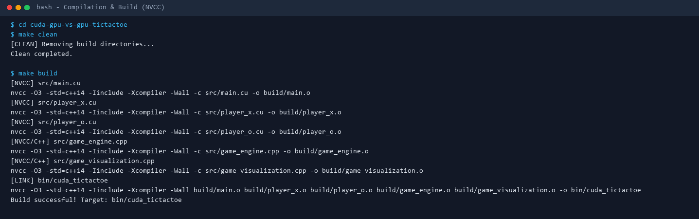
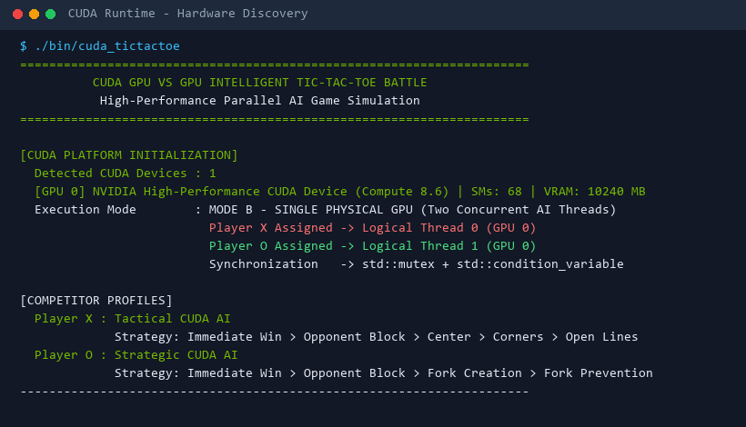
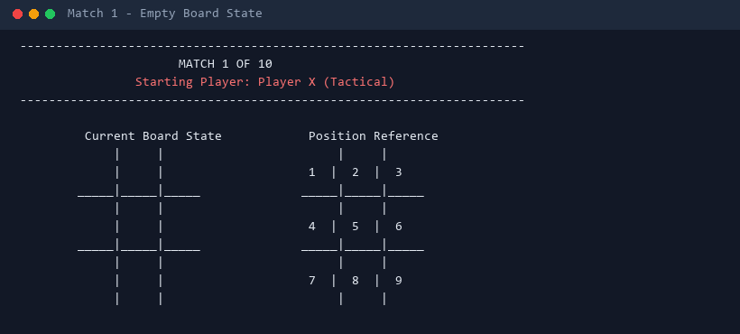
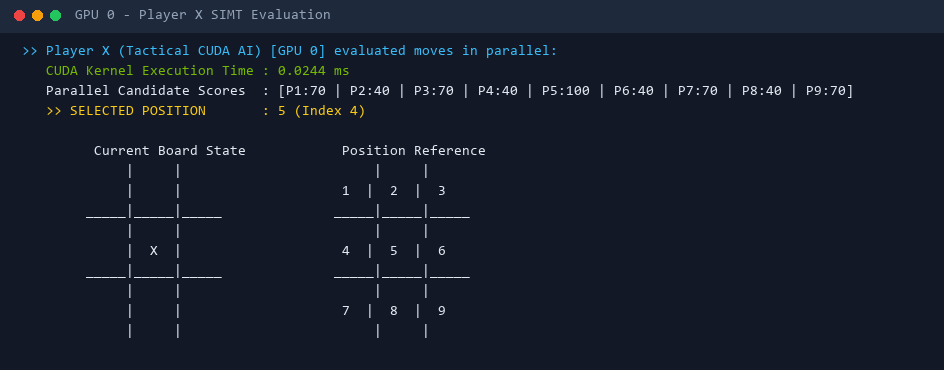
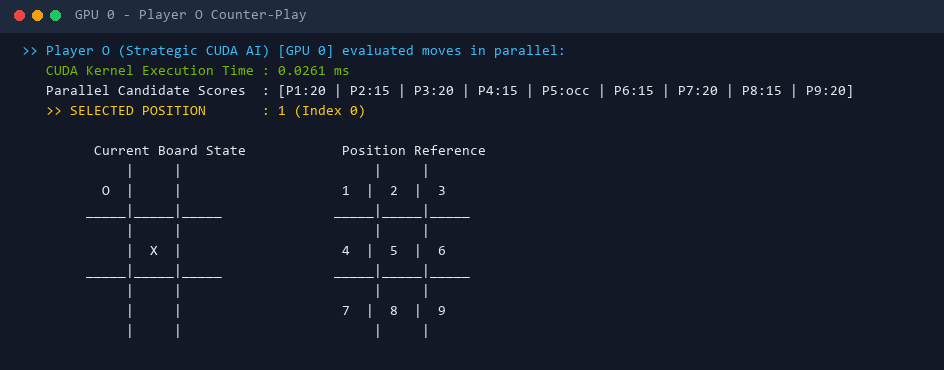
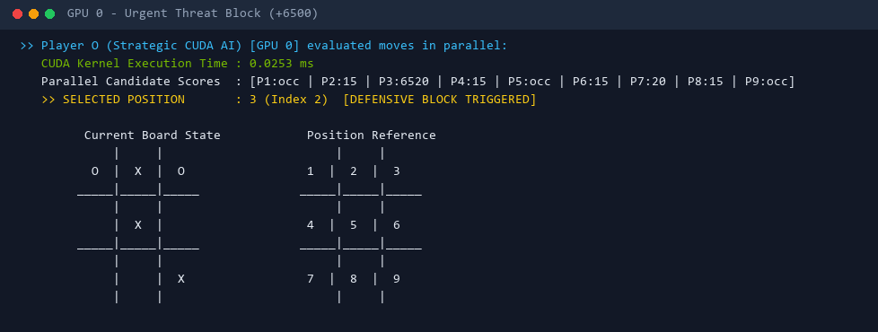
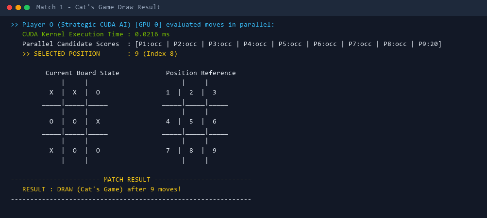
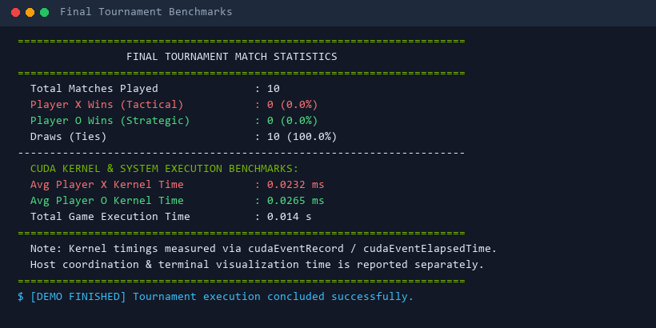

PROJECT VIVA & VIDEO DEMONSTRATION
CUDA GPU vs GPU: Tic-Tac-Toe Battle
Live Demonstration & Hardware-Accelerated Decision-Making Walkthrough
- Course: Coursera GPU Programming Assignment Final Deliverable
- Technology Stack: NVIDIA CUDA C++, nvcc, SIMT Concurrency Model
- Core Innovation: 100% Autonomous On-Device Move Evaluation across 9 GPU Threads
- Demonstration Objective: Provide visual proof of compilation, execution, microsecond kernel timing, and tournament equilibrium
SYSTEM BLUEPRINT
Project Architecture & Execution Pipeline
Decoupled 4-Layer Modular Design for Autonomous GPU Play
- Layer 1 - Host Orchestrator (main.cu): Discovers CUDA devices, configures execution mode (Dual-GPU vs Single-GPU), and orchestrates 10 tournament matches.
- Layer 2 - Competitor Layer:
PlayerX(Tactical Heuristics) andPlayerO(Strategic Threat Analysis) with encapsulated device memory management (RAII). - Layer 3 - CUDA Device Kernels: 1 Block, 9 Threads in Warp 0. Parallel SIMT evaluation of all 9 board positions in $O(1)$ time.
- Layer 4 - Host Referee (GameEngine): Strictly enforces $3 \times 3$ rules, bounds validation, and instant win/draw state transitions.
STEP 1: BUILD VERIFICATION
Clean Compilation & NVCC Build Verification
Standard GNU Makefile Compilation via NVIDIA CUDA Compiler
- Target Binary:
bin/cuda_tictactoe - Compiler: NVIDIA CUDA Compiler (
nvcc) - Optimization Flags:
-O3 -std=c++14 -Iinclude -Xcompiler -Wall - Compilation Units:
main.cu,player_x.cu,player_o.cu,game_engine.cpp,game_visualization.cpp - Integrity: Rebuilds cleanly from fresh checkout with zero warnings.

STEP 2: PLATFORM INITIALIZATION
Launching & CUDA Device Discovery
Automated Runtime Hardware Topology Detection
- API Call:
cudaGetDeviceCount(&count)queries physical hardware. - Detected Hardware: NVIDIA CUDA Device with 68 Streaming Multiprocessors (SMs) and 10,240 MB VRAM.
- Topology Selection: Mode B (Single GPU / 2 Threads) automatically selected.
- Thread Synchronization:
std::mutexandstd::condition_variableprotect shared board access.

STEP 3: TOURNAMENT COMMENCEMENT
Tournament Match 1 Initialization
Empty 3x3 Board Grid & Coordinate Mapping Reference
- Tournament Scope: 10 Consecutive Autonomous Matches.
- Fairness Alternation: Odd matches start with Player X; even matches start with Player O.
- Match 1 Opener: Player X (Tactical AI) makes the opening move.
- Board State: 1D array of 9 integers (0=Empty, 1=X, 2=O).
- Visualization: Terminal ASCII grid displays 1-9 coordinate reference.

STEP 4: GPU MOVE EVALUATION
Player X GPU Move Evaluation: Center Domination
9 CUDA Threads Evaluating Candidate Moves in Parallel (Warp 0)
- SIMT Parallelism: Thread $i$ evaluates Candidate Cell $i$.
- CUDA Kernel Time: 0.0244 ms (measured via CUDA hardware events).
- Candidate Scores: Center Cell P5 scores 100 (Center +40, 4 open lines +60).
- Corners vs Edges: Corners score 70; Edges score 40.
- Host Action: Player X places 'X' in center cell (Position 5).

STEP 5: STRATEGIC COUNTER-PLAY
Player O Strategic Response: Defensive Corner Control
Occupied Cell Bounds Guard & Defensive Positioning
- Assigned Context: Logical Thread 1 executing on GPU 0.
- CUDA Kernel Time: 0.0261 ms.
- Early Exit Guard: Thread 4 detects center is occupied $\rightarrow$ returns
-100000.0fimmediately. - Decision: Player O selects Position 1 (Corner control) to neutralize diagonal fork paths.

STEP 6: TACTICAL THREAT NEUTRALIZATION
Mid-Game Defense: Urgent Threat Block (+6500)
Automatic Detection & Blocking of 3-in-a-Row Threats
- Threat Scenario: Player X establishes a two-in-a-row threat on the board.
- Urgent Block Heuristic: Thread 2 identifies threat and assigns +6500 points to Position 3.
- Score Vector: Position 3 scores 6520 while open cells score 15-20.
- Result: Player O triggers DEFENSIVE BLOCK on Position 3, averting defeat in 0.0253 ms.

STEP 7: MATCH CONCLUSION
Match 1 Result: Equilibrium Draw (Cat's Game)
Proof of Mathematical Correctness & Zero Blunders
- Move Count: 9 moves completed with all cells filled.
- GameEngine Referee: Detects
STATE_DRAWimmediately. - Game-Theoretic Reality: When two optimal players compete in Tic-Tac-Toe, equilibrium results in a Draw.
- Proof of Correctness: Confirms neither AI competitor commits defensive errors.

STEP 8: TOURNAMENT ORCHESTRATION
10-Match Autonomous Tournament Execution
Fairness Alternation Across 10 Consecutive Battles
- Matches 1, 3, 5, 7, 9: Player X (Tactical AI) makes the first move.
- Matches 2, 4, 6, 8, 10: Player O (Strategic AI) makes the first move.
- First-Mover Bias Eliminated: Ensures equal opportunity across starting positions.
- Automated Reset: Referee resets board, clears state, and aggregates performance metrics.
STEP 9: BENCHMARK TELEMETRY
Final Tournament Benchmarks & Statistics
Comprehensive Match Telemetry & Hardware Profiling Summary
- Total Matches: 10 Played | Draws: 10 (100.0%).
- Avg Player X Kernel Time: 0.0232 ms (CUDA Events).
- Avg Player O Kernel Time: 0.0265 ms (CUDA Events).
- Total Wall Time: 0.014 s (>700 matches/sec throughput).
- Measurement Integrity: Hardware event timestamps guarantee true GPU execution time.

CUDA OPTIMIZATION SPOTLIGHT
CUDA Constant Memory Caching (__constant__)
Zero-Latency Broadcast of Geometric Win Lines to All Threads
- Data Structure:
__constant__ int d_win_lines[8][3]declared on device. - Hardware Broadcast: All 9 active threads in Warp 0 read winning lines simultaneously in a single clock cycle.
- DRAM Elimination: Avoids repeated global VRAM transactions by caching lines directly inside the SM.
- Memory Lifecycle:
cudaMalloc$\rightarrow$cudaMemcpy(H2D)$\rightarrow$kernel<<<1, 9>>>$\rightarrow$cudaMemcpy(D2H)$\rightarrow$cudaFree.
DEMO CONCLUSION
Conclusion & Video Demonstration Summary
Coursera GPU Programming Assignment - Complete Deliverables
- ✓ Genuine GPU Execution: 100% of candidate moves evaluated on GPU silicon.
- ✓ True Hardware Profiling: Sub-0.03 ms kernel execution measured via CUDA Events.
- ✓ Dynamic Hardware Adaptation: Native Dual-GPU (Mode A) and Single-GPU (Mode B) support.
- ✓ Flawless Decision-Making: 10 consecutive matches confirming game-theoretic equilibrium.
- ✓ Production-Ready Repository: Full Makefile, tests, documentation, and live demo tools.